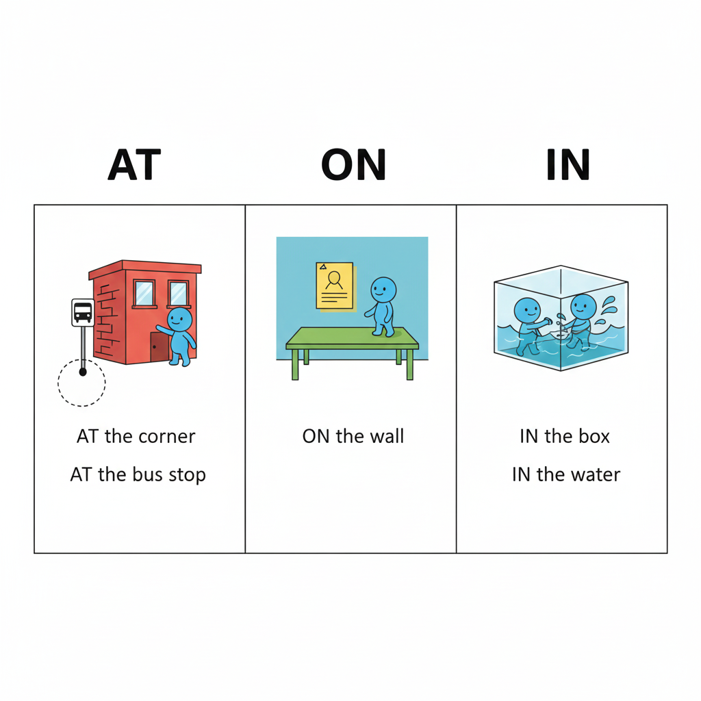
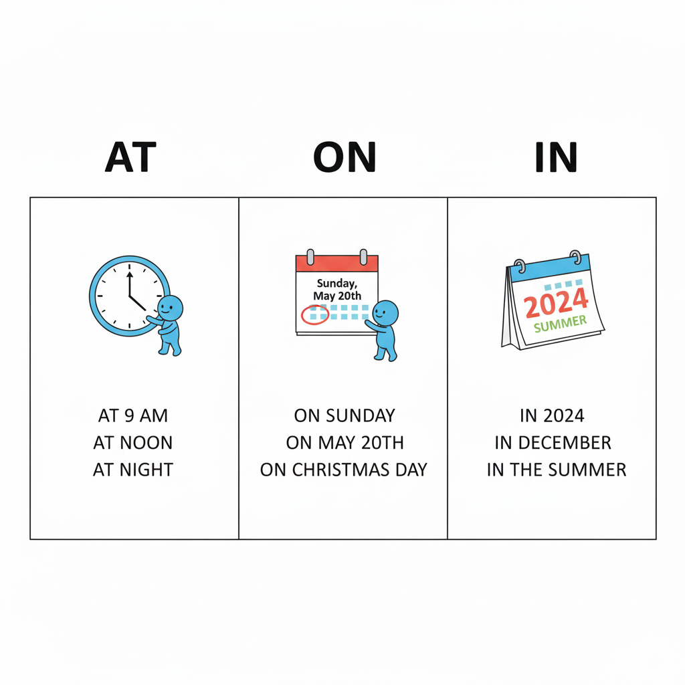

一、表示地點時：點 (at)、面 (on)、空間 (in)

| 介系詞 | 核心畫面 | 常見用法＆例句 |
|---|---|---|
| at | 一個「點」：地圖上的定位點 |
表示很明確的「點」或門牌號碼： at the bus stop, at the door, at No. 10, at the coffee shop Let's meet at the coffee shop.（我們約在咖啡店見面。） |
| on | 一個「面」：站在某個平面上 |
表示街道、樓層、交通工具裡的「平面」感： on the second floor, on the street, on a bus, on a train, on an airplane The kids are playing on the street. |
| in | 一個「空間」：被包在裡面 |
表示城市、國家、房間、容器等「裡面」： in Taiwan, in Taipei, in the mountains, in a car, in a box My keys are in my bag.（我的鑰匙在包包裡。） |
「在辦公室」：in the office vs. at the office
- at the office：講地點，「人在那裡」。
Sam is at the office now.（Sam 現在人在辦公室。） - in the office：講狀態，「人在辦公室裡、正在工作」。
Lisa is in her office.（Lisa 在辦公室裡忙工作。） - Please call me at the office.「請打電話到我辦公室給我」。
二、表示時間時：at < on < in

| 介系詞 | 時間感 | 常見搭配 |
|---|---|---|
| at | 時間線上的「一點」 |
特定時間點：at 7:00, at noon, at midnight, at dawn I have breakfast at 7:00. 特定瞬間：at that moment, at the beginning / at the end |
| on | 特定「某一天」 |
星期、日期、特定的一天： on Friday, on May 5th, on my birthday, on Halloween We have a meeting on Monday. on Halloween 是「萬聖節那天」， at Halloween 則是「萬聖節期間」這段時間。 |
| in | 一段較長的時間內 |
月份、年份、季節、時代、世紀： in August, in 2015, in winter, in the 21st century 一段時間內：in two weeks, in my lifetime She will move in two weeks.（她兩週內要搬家。） |
三、回到 12 時態的時間感
這一頁的 in / on / at，是在補「時間點/時間段」與「地點/空間」的感覺； 回頭搭配首頁的 12 時態時間軸一起看，會更容易把英文的「時間感」連起來。
之後你在做題目時，如果卡在介系詞，可以先問自己：
「我現在想表達的是『一個點』、『一個面』，還是『一個空間／一段時間』？」
通常答案就會自動浮現出來。